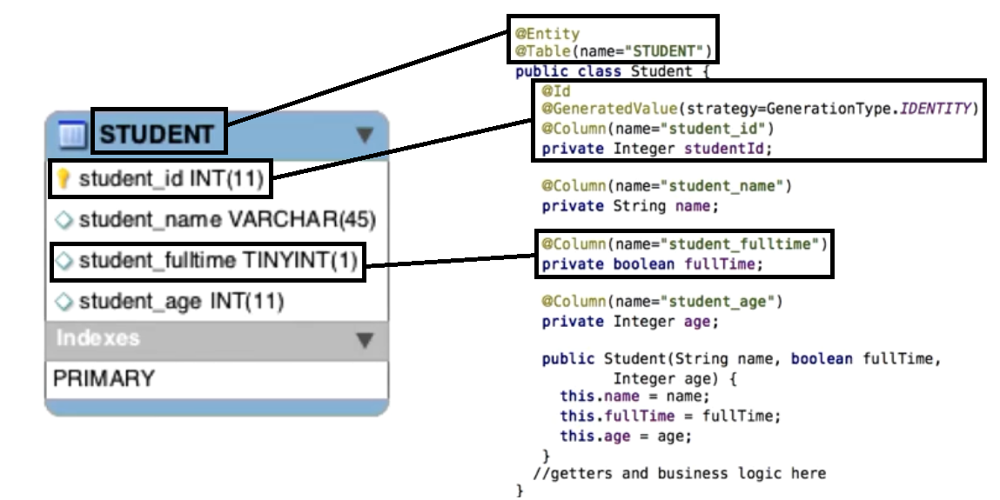
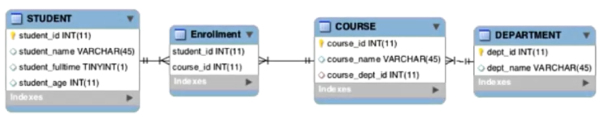
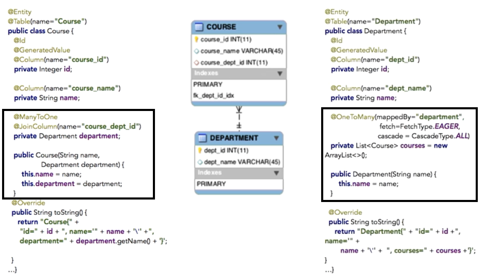

Spring data's mission is to provide a familiar and consistent Spring based programing model for data access, while still retaining the special traits of the underlying data store.
Before we go any further I think it is very important to get to know the Spring Data homepage: Spring data homepage In this page you will find a lot of examples and documentation.
The goal is to convert java object entities into target data source records and persist them, as well as convert the records back to entities.
The repository pattern is the abstraction used by Spring Data commons for creating, reading, updating, and deleting records by citing entities.
Any module for a particular data source has a repository that extends from the generic one. So for example, Spring Data JPA has a JPA repository, Spring Data mongo DB has a mongo repository, Spring Data gemfire has a gemfire repository, and so on.
A classic problem in programming is mapping the physical model to the logical model. Typical physical models are relational database, and the logical model is the Java domain objects.
It is possible to do ORM in plain vanilla Java, but it's nasty.
Queries that modify the database require committing the transaction or rolling it back if an error occurs. Programming this way is tedious. The code is difficult to refactor and maintain.
Object to relational mapping frameworks solve this problem. With an ORM framework a developer declares metadata to associate Java classes and attributes to database tables and columns. The framework then handles the actual database interactions. So the code is abstracted away from the database. This makes it lighter and easier to maintain.
Java persistence application programming interface is an ORM standard, it is not an actual framework.
Framework are Hibernate and EclipseLink, as well as Java Enterprise Edition. Those frameworks provide the implementation of the JPA. So even if we speak about a Java application that uses JPA, it is actually using another provider following the JPA specification.
The specification includes metadata declarations (XML or annotations) to map Java classes (now called entities) to database tables.
An EntityManager creates, reads, updates, and deletes the entities. Changes to the entity's state are reflected back to the database. The entity metadata is in the form of .xml files, or within Java classes, via Java annotations. This tutorial only demonstrates Java annotations. Please refer to the JPA specification if you prefer xml.
Let's see a JPA entity. We'll start with a simple example where we map one database table to one JPA entity.
On the left side is an ER diagram component representing a table called student. Student has four columns. Student_id, student_name, student_fulltime, and student_age. On the right side is a Java class called student with four attributes. Student_id of type integer, name, that's a string, fulltime, which is a boolean, and age, which is an integer.
We have to use the followings annotations to do the mapping:
Now that we have mapped the java class with the database table, all of our coding can stay in the logical world because JPA will take care of the physical world for us.
Now let's look at an ER diagram with multiple tables. There are four tables in our University database. Department, course, enrollment and student. Department is the academic division of a university and has an ID and a name. Course is a particular class offered at the university. It also has an ID and a name as well as an ID of its department. Students are enrolled in courses, so we have a join table called enrollment that has a course ID and a student ID.
Now let's see how to map the updated physical model to our logical model. There is a relationship many to one between department and course. So, how do we map this relationship? The Course has a "course_dept_id" so we need an attribute anotated with @JoinColum and @ManyToOne. The @ManyToOne annotation shows cardinality (many courses are mapped to one department).
Now let's look at the other side of the relationship. Department to courses, the department has a list of courses so we need an attribute List<Course> courses. And we have to annotate this attirubte with @OneToMany. The parameters passed to @OneToMany express the following: